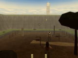

VALIDATEDReedland Relay
A small STORY 1.2 adventure in 3 rooms with a timed course, an arena fight and region gates. Installs as a new game you can compile, check and edit.
Details
- Id
- game.reedland_relay 1.0.0
- By
- Qhantom Labs
- For
- forest village
- Files
- 5 · 13 KB
- Proof
- conditional, accepted by its module policy
- Playtest
- not run
- Style
- not run
- Human
- not reviewed
- Picture
- in-game capture of Reedland Relay (module runtime evidence)